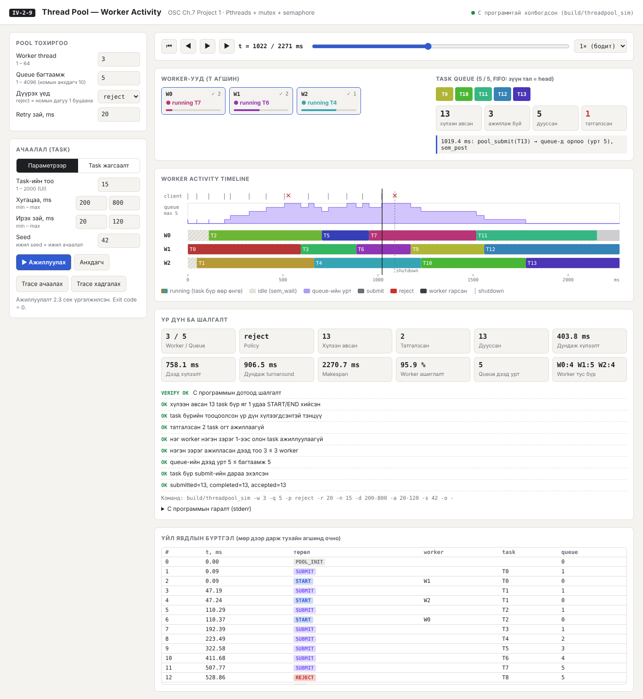
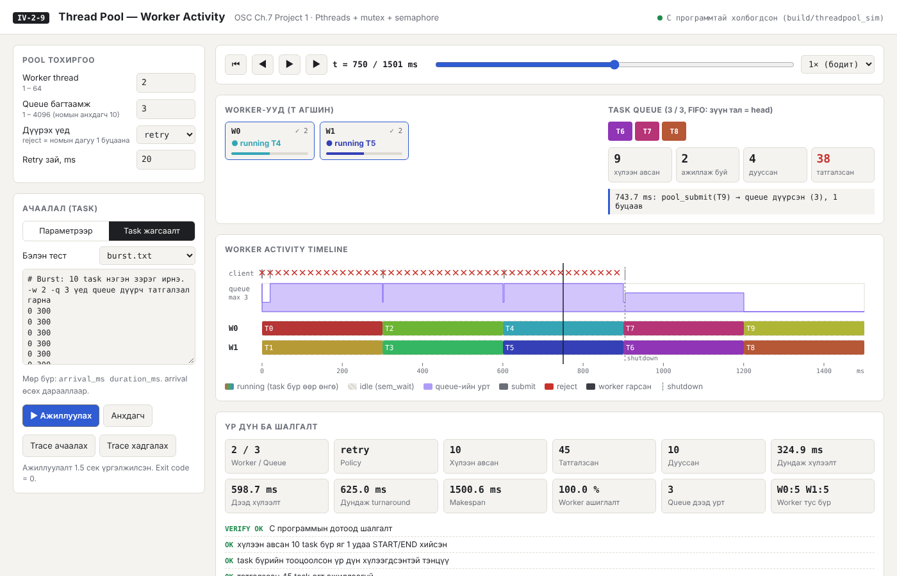
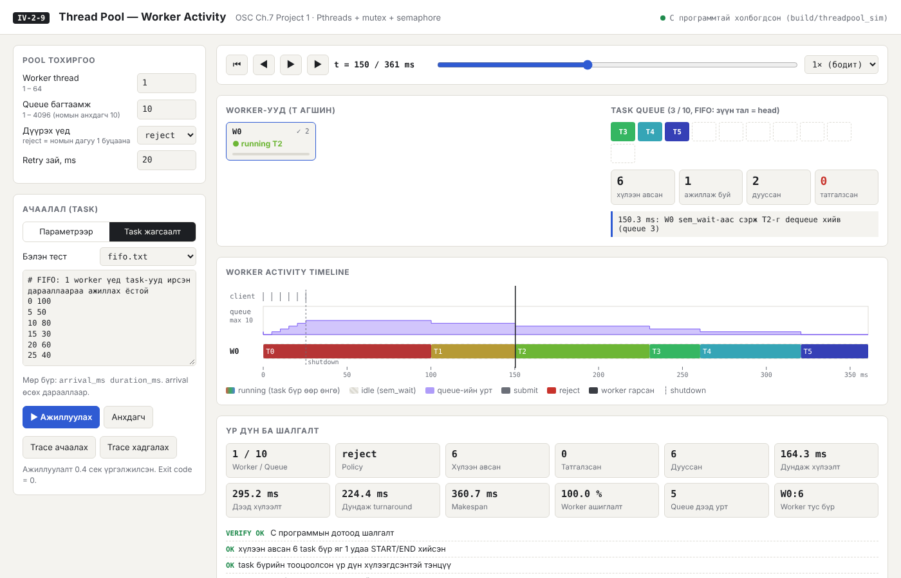
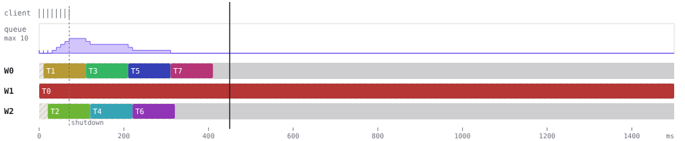
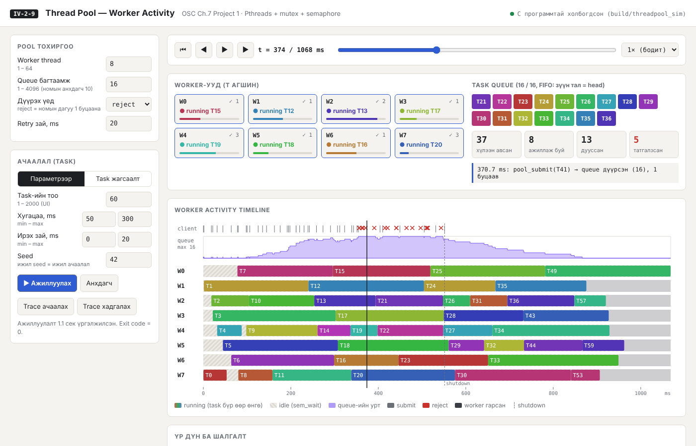
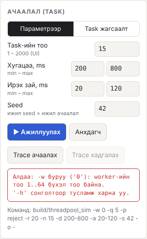
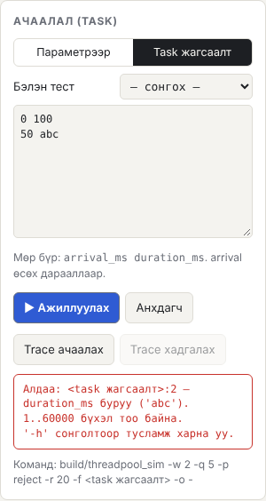
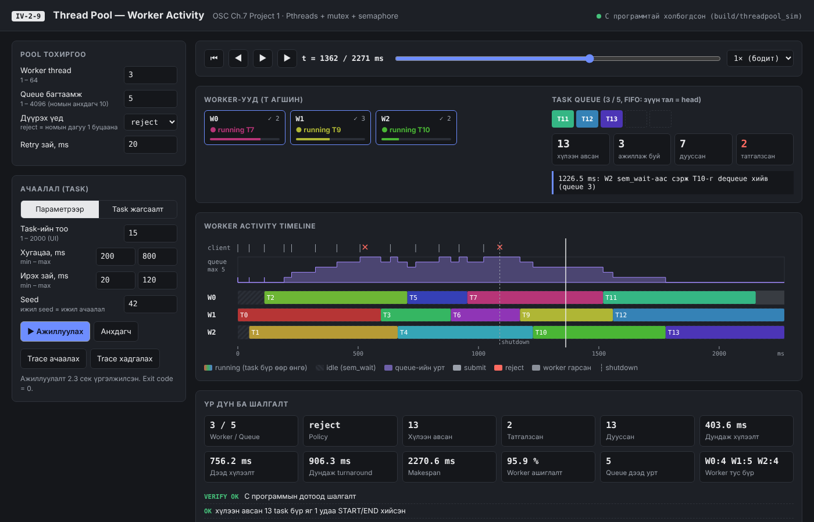

Асуудал. Хүсэлт бүрт шинэ thread үүсгэх нь үүсгэх/устгах зардалтай. Мөн нэгэн зэрэг ажиллах thread-ийн тоог хязгаарладаггүй. Thread pool нь цөөн тооны worker thread-ийг урьдчилан үүсгэж, ажлыг хуваалцсан queue-ээр дамжуулан хуваарилна. Энэ үед queue руу олон thread зэрэг хандах тул race condition үүсэх аюултай. Мөн ажилгүй worker-уудыг CPU үрэхгүйгээр хүлээлгэх шаардлагатай.
Шийдэл. Номын POSIX хувилбарын API-г (pool_init, pool_submit, pool_shutdown) C хэл дээр хэрэгжүүлсэн. Queue нь тойрог массив бөгөөд pthread_mutex-ээр хамгаалагдсан. Worker-ууд sem_wait дээр блоклогдон хүлээж, task орж ирэхэд sem_post-оор сэрнэ. Программ бүх үйл явдлыг микросекундын нарийвчлалтай бүртгэж JSON trace гаргана. Interactive UI нь энэ trace-ээр worker бүрийн idle/running/completed төлөв, queue-ийн дүүргэлт, татгалзлыг хугацааны тэнхлэг дээр алхамчлан харуулна. UI-ийн “Ажиллуулах” товч C программыг бодитоор ажиллуулдаг.
Туршилт ба үр дүн. 29 автомат тест бүгд амжилттай (0 алдаа). Үүнд номын client.c жишээ, үндсэн 6, захын 5, буруу оролтын 17 тест багтана. Тест бүрийн trace-ийг C кодоос хамааралгүй Python шалгагчаар дахин шалгасан. Шалгасан шинжүүд: task бүр яг 1 удаа ажилласан, нэг worker давхар ажил аваагүй, queue FIFO дарааллаар ажилласан, багтаамжаас хэтрээгүй. ThreadSanitizer race condition илрүүлээгүй. 40 task-ийн ачаалалд worker-ийн тоог 1→16 болгоход makespan 8373 ms-ээс 646 ms болж буурсан (13.0× хурдатгал).
Зорилго. Сурах бичгийн 7-р бүлгийн Programming Project 1-ийн POSIX хувилбарыг бүрэн хэрэгжүүлэх. Worker-ийн тоо, queue-ийн багтаамж, ачааллыг өөрчилж турших боломжтой программ бүтээх. Thread pool-ийн ажиллагааг “Worker activity” дүрслэлээр нотлох.
Ач холбогдол. Thread pool нь вэб сервер, өгөгдлийн сан, Java ExecutorService, Linux kernel-ийн workqueue зэрэг олон системийн үндэс юм. Энэ төсөл нь 6–7-р бүлгийн mutex, semaphore, bounded buffer (producer–consumer) ойлголтуудыг бодит программд нэгтгэж харуулна. Pool-д task өгөгч thread нь producer, worker-ууд нь consumer болно.
Хамрах хүрээ. Хамарсан: Linux дээрх POSIX хувилбар, номын API, массиваар хэрэгжүүлсэн queue, тохируулах параметр, trace, тест, interactive UI. Хамаараагүй: Java хувилбар (номонд сонголтоор өгсөн), task-ийн priority, worker-ийн тоог динамикаар өөрчлөх.
Номын Project 1 (P-35…P-38) дахь POSIX хувилбарын шаардлага ба хэрэгжүүлэлтийн харгалзаа:
| # | Номын шаардлага | Хэрэгжүүлэлт | Нотолгоо |
|---|---|---|---|
| 1 | pool_init() нь thread-үүдийг эхэнд үүсгэж, mutex ба semaphore-ийг эхлүүлнэ | pool_init() (3 worker, queue 10) ба pool_init_ex(n, cap) | POOL_INIT, IDLE үйл явдал; book_client тест |
| 2 | pool_submit() task struct-ийг enqueue()-ээр queue-д хийнэ; worker dequeue() хийнэ | task {{function, data, id}}, тойрог массив enqueue/dequeue | SUBMIT/START, FIFO шалгалт |
| 3 | Массив queue дүүрсэн бол 1 буцаана, бусад үед 0 | POOL_FULL=1, POOL_OK=0 (+ POOL_ERR=2 shutdown-ы дараа) | burst_reject, queue_cap_1 |
| 4 | worker() ажил хүлээж, авснаа execute()-ээр ажиллуулна; мэдэгдэлд semaphore | sem_t work_available; sem_wait → dequeue → execute() | worker_exclusive шалгалт |
| 5 | Queue-д хандахад mutex заавал | pthread_mutex_t qmutex | ThreadSanitizer: 0 race |
| 6 | pool_shutdown() worker-уудыг зогсоож pthread_join() хийнэ; бүх task дууссаны дараа | shutdown флаг + N удаа sem_post → үлдсэн task-уудыг гүйцээгээд гарна → pthread_join | SHUTDOWN → WORKER_EXIT, counts_consistent |
| 7 | Номын client.c жишээ ажиллана | examples/client.c — 5 нийлбэр | book_client: PASS |
Хуваарилалтын файлын 9-р сэдвийн хүрэх үр дүн: “Worker-ийн тоо, task queue, ажлын параметрийг өөрчилж, worker бүрийн idle, running, completed төлөвийг хугацааны явцад харуулна.” Үүнийг 6-р хэсэгт тайлбарласан UI хангана.
Pool эхлэхдээ тогтмол тооны thread үүсгэнэ. Ирсэн ажил queue-д ордог бөгөөд чөлөөтэй thread түүнийг авч гүйцэтгэнэ. Давуу тал нь гурав. Нэгдүгээрт, байгаа thread-ээр үйлчлэх нь шинэ thread үүсгэхээс хурдан. Хоёрдугаарт, нэгэн зэрэг ажиллах thread-ийн тоо хязгаарлагдмал тул систем хэт ачаалагдахгүй. Гуравдугаарт, ажлыг ажиллуулах механизмаас тусгаарласан тул хуваарилах стратегийг тусад нь өөрчилж болно.
Queue-ийн head, tail, count хувьсагчдыг хэд хэдэн thread зэрэг өөрчилбөл race condition үүснэ. Жишээлбэл хоёр worker нэг task-ийг зэрэг dequeue хийж болно. pthread_mutex_lock/unlock нь энэ critical section-д нэг удаад нэг л thread орохыг баталгаажуулна.
Тоолдог semaphore-ийн утга нь queue дахь task-ийн тоотой тэнцүү. sem_wait() утга 0 бол thread-ийг блоклоно, өөрөөр хэлбэл busy-wait хийхгүй. Утга 0-ээс их бол утгыг 1-ээр бууруулна. sem_post() утгыг нэмэгдүүлж, хүлээж буй нэг thread-ийг сэрээнэ. Номд unnamed semaphore (sem_init(&sem, 0, 0)) ашиглахыг зөвлөсөн: pshared=0 бол зөвхөн нэг процессын thread-үүд хуваалцана.
Thread pool-ийн queue бол bounded-buffer бодлогын нэг хэлбэр. Номын шийдэлд empty, full, mutex гэсэн гурван semaphore бий. Thread pool-д full-ийн үүргийг work_available гүйцэтгэнэ. empty-ийн оронд дүүрсэн queue-д producer-ийг блоклохгүйгээр шууд 1 буцаадаг. Энэ нь номын pool_submit()-ийн тодорхойлолт юм. retry горимд client өөрөө хүлээгээд дахин оролдоно.
Номд pthread_cancel()-ийг санал болгосон: sem_wait() бол cancellation point. Гэвч deferred cancellation нь task ажиллаж байх үед nanosleep гэх мэт cancellation point дээр thread-ийг таслах боломжтой. Ингэвэл task дутуу үлдэж, түүний барьсан нөөц суллагдахгүй байж болно. Тиймээс бид “хамтран зогсох” (cooperative) аргыг сонгосон. Энэ нь “бүх task дууссаны дараа зогсоно” гэсэн API-ийн тайлбартай нийцнэ (5.4-т дэлгэрэнгүй).
| Компонент | Хэл | Үүрэг |
|---|---|---|
src/threadpool.c/.h | C11, Pthreads | Thread pool цөм: queue, mutex, semaphore, worker, shutdown, trace бүртгэл |
src/main.c | C11 | Туршилтын client: CLI параметр/файл уншиж шалгах, task үүсгэх, хугацаанд нь submit хийх, үр дүнг тооцох, 8 инвариант шалгах, JSON гаргах |
examples/client.c | C11 | Номын client.c жишээ — API-г өөрчлөлтгүй ашиглана |
tools/server.py | Python 3 stdlib | UI-ийн параметрийг CLI аргумент болгож бинарыг ажиллуулна; алдааг дамжуулна |
ui/index.html | HTML/CSS/JS | Worker activity дүрслэл, playback, бүртгэл; гадны сангүй, offline горимтой |
tests/ | sh, Python | Тестийн өгөгдөл, тест ажиллуулагч, хараат бус trace шалгагч, туршилтын скрипт |
typedef struct { void (*function)(void *p); void *data; int id; } task;
static task *queue; static int qcap, qhead, qtail, qcount; /* тойрог массив */
static pthread_mutex_t qmutex; /* queue + тоолуурыг хамгаална */
static sem_t work_available; /* queue дахь task-ийн тоо */
typedef struct { long long t_us; pool_event_type type; int worker, task, qlen; } pool_event;
Үйл явдал бүр {t, type, w, task, q} бүтэцтэй. t нь pool_init-ээс хойшх микросекунд, q нь үйл явдлын дараах queue-ийн урт. Төрлүүд: POOL_INIT, IDLE, SUBMIT, REJECT, START, END, SHUTDOWN, WORKER_EXIT. Цагийг trace-ийн mutex дотор авдаг тул массивын дараалал хугацааны дараалалтай давхцана. SUBMIT ба START-ийг queue-ийн mutex дор бүртгэдэг тул бүртгэсэн q нь бодит queue-ийн урттай яг тэнцүү.
Цөм нь C11 дээр бичигдсэн бөгөөд зөвхөн libc ба pthread ашиглана. Build-ийг make, compiler-ийг gcc -std=c11 -Wall -Wextra -O2 гүйцэтгэнэ. Сервер нь Python 3-ийн стандарт сантай (http.server, subprocess), UI нь цэвэр JavaScript ба SVG. macOS unnamed semaphore-ийг дэмждэггүй тул тэнд dispatch_semaphore-тэй жижиг wrapper ашиглана. Linux дээр жинхэнэ POSIX sem_init/sem_wait/sem_post ажиллана.
static void *worker(void *param)
{
worker_info *me = param;
for (;;) {
trace(EV_WORKER_IDLE, me->id, -1, -1);
psem_wait(&work_available); /* ажил (эсвэл shutdown) хүлээнэ */
pthread_mutex_lock(&qmutex);
if (qcount == 0 && shutting_down) { /* queue хоосон + shutdown → гарна */
pthread_mutex_unlock(&qmutex);
break;
}
task t = dequeue();
trace(EV_START, me->id, t.id, qcount);
pthread_mutex_unlock(&qmutex);
execute(t.function, t.data); /* critical section-оос ГАДНА */
pthread_mutex_lock(&qmutex);
completed++;
per_worker_completed[me->id]++;
trace(EV_END, me->id, t.id, qcount);
pthread_mutex_unlock(&qmutex);
}
trace(EV_WORKER_EXIT, me->id, -1, -1);
return NULL;
}
Гол шийдлүүд: (1) sem_wait нь mutex-ээс гадна байна. Mutex барьсан чигээрээ блоклогдвол бусад thread submit хийж чадахгүй тул deadlock болно. (2) execute()-ийг mutex-ийг суллаад ажиллуулна. Тэгэхгүй бол worker-ууд дараалж ажиллан pool утгагүй болно. (3) sem_wait-ийг EINTR-д давтана.
int pool_submit_id(void (*somefunction)(void *p), void *p, int task_id)
{
if (!somefunction) return POOL_ERR;
pthread_mutex_lock(&qmutex);
if (!initialized || shutting_down) { pthread_mutex_unlock(&qmutex); return POOL_ERR; }
if (task_id < 0) task_id = next_auto_id++;
task t = { somefunction, p, task_id };
if (enqueue(t) != 0) {
rejected++;
trace(EV_REJECT, -1, task_id, qcount);
pthread_mutex_unlock(&qmutex);
return POOL_FULL;
}
submitted++;
trace(EV_SUBMIT, -1, task_id, qcount);
pthread_mutex_unlock(&qmutex);
psem_post(&work_available); /* хүлээж буй нэг worker-ийг сэрээнэ */
return POOL_OK;
}
sem_post-ийг mutex суллагдсаны дараа дууддаг. Ингэснээр сэрсэн worker тэр даруй mutex-ийг авах боломжтой. Task queue-д орсон тохиолдолд л post хийдэг тул semaphore-ийн утга queue-ийн уртаас хэзээ ч их болохгүй.
void pool_shutdown(void)
{
pthread_mutex_lock(&qmutex);
if (!initialized || shutting_down) { pthread_mutex_unlock(&qmutex); return; }
shutting_down = 1;
trace(EV_SHUTDOWN, -1, -1, qcount);
pthread_mutex_unlock(&qmutex);
/* Worker бүрт нэг "гарах" дохио. Queue-д үлдсэн task бүр өөрийн post-той тул
* worker-ууд эхлээд бүх task-ийг гүйцээж, дараа нь л гарна. */
for (int i = 0; i < nthreads; i++) psem_post(&work_available);
for (int i = 0; i < nthreads; i++) pthread_join(workers[i].tid, NULL);
pthread_mutex_lock(&qmutex);
psem_destroy(&work_available);
free(queue); queue = NULL;
initialized = 0;
pthread_mutex_unlock(&qmutex);
}
Зөв байдлын тайлбар. Shutdown-ы өмнө queue-д k task байлаа гэж үзье. Semaphore-ийн утга k + N болно (task тус бүрийн post + worker тус бүрт нэг гарах дохио). Worker queue хоосон байхад л гардаг тул эхний k удаа сэрэхдээ task авна. Үлдсэн N удаагийн сэрэлт нь worker бүрийг нэг удаа гаргана. Тиймээс бүх task гүйцэтгэгдэж, бүх worker гарч, pthread_join блоклогдож үлдэхгүй. counts_consistent шалгалт (submitted = completed) үүнийг тест бүрт нотолсон.
Бүх тоог strtol-оор мөр бүтнээрээ уншдаг. Иймээс “12abc” болон хоосон утгыг хүлээж авахгүй. Хязгаар: worker 1–64, queue 1–4096, task 1–10000, хугацаа 1–60000 ms, ирэх зай 0–60000 ms, MIN ≤ MAX. Task-ийн файлын алдааг файл:мөр байршил, буруу утгын хамт мэдээлнэ. Буруу оролтын үед exit code 2 буцаана. Сервер энэ мэдээллийг UI-ийн улаан хайрцагт дамжуулдаг (Зураг 9, 10).
Ажиллаж дууссаны дараа main.c trace-ээс 8 инвариант шалгана. Task бүр нийлбэр тооцоолдог тул үр дүн нь хүлээгдсэн утгатай тэнцэх ёстой. Мөн task бүрийн ажилласан тоог тусдаа mutex-тэй тоолуураар бүртгэнэ. Инвариантууд: accepted_run_once, results_correct, rejected_not_run, worker_exclusive, concurrency ≤ workers, queue ≤ capacity, start ≥ submit, submitted = completed. Аль нэг нь унавал exit code 4 буцаана.
| Параметр | UI / CLI | Ажиглах зүйл |
|---|---|---|
| Worker-ийн тоо | Worker thread / -w | Зэрэгцээ ажиллах lane-ийн тоо, makespan, ашиглалт |
| Queue багтаамж | Queue багтаамж / -q | Queue-ийн slot, дүүрэх үеийн REJECT (✕) |
| Дүүрэх үеийн бодлого | Дүүрэх үед / -p reject|retry, -r | Татгалзсан task алга болох уу, эсвэл client хүлээгээд дахин оролдох уу |
| Ачаалал | Task-ийн тоо, хугацаа, ирэх зай, seed / -n -d -a -s | Queue-ийн урт өсөх/буурах, хүлээлтийн хугацаа |
| Тодорхой сценари | Task жагсаалт, бэлэн тест / -f | Burst, FIFO, урт+богино холимог |
| UI элемент | Харуулах зүйл | OS ойлголт |
|---|---|---|
| Worker lane (timeline) | Өнгөт bar = task ажиллаж буй хугацаа; судалтай саарал = idle | Worker sem_wait дээр блоклогдсон / execute() |
| Worker карт | t агшин дахь төлөв (running Tk / idle / exited), явцын шугам, ✓ дууссан тоо | idle, running, completed (сэдвийн шаардлага) |
| Queue slot | Хүлээж буй task-ууд FIFO дарааллаар, багтаамжийн хоосон slot | Тойрог массив, qcount |
| Queue-ийн урт (step chart) | Queue хугацааны явцад хэр дүүрсэн | Semaphore-ийн утга = queue-ийн урт |
| client мөр: | ба ✕ | Submit хийсэн агшин, татгалзсан агшин | pool_submit() 0 / 1 буцаалт |
| shutdown зураас, хар бүс | pool_shutdown() дуудагдсан ба worker гарсан агшин | Cooperative shutdown, pthread_join |
| Үйл явдлын тайлбар | Тухайн агшны үйл явдлыг API-ийн нэрээр | sem_post → sem_wait-аас сэрэх → dequeue |
| Playback | ▶/⏸, өмнөх/дараагийн үйл явдал, гулсуур, 0.25×–10× хурд, timeline дээр дарж/чирэх, бүртгэлийн мөр дээр дарах | Алхамчилж эргэн шалгах |
Дүрслэл бүхэлдээ C программын trace-ээс зурагддаг. JS симуляци огт байхгүй тул UI дээр харагдах хугацаа, worker-ийн хуваарилалт бүгд бодит ажиллагааных. Нэг параметрээр дахин ажиллуулахад worker-ийн хуваарилалт бага зэрэг өөр гарч болно. Энэ нь OS scheduler-ийн жинхэнэ nondeterminism юм (9-р хэсэг). “Trace хадгалах” товчоор тухайн ажиллуулалтыг JSON болгон хадгалж, дараа нь сервергүйгээр дахин үзэж болно.
| Зүйл | Утга |
|---|---|
| OS | Ubuntu 24.04.5 LTS, kernel 6.18.44-fc-v180 |
| CPU | Intel(R) Xeon(R) Processor @ 2.30GHz, 2 core, x86_64 |
| Compiler | gcc (Ubuntu 13.3.0-6ubuntu2~24.04.1) 13.3.0 |
| libc / pthread | ldd (Ubuntu GLIBC 2.39-0ubuntu8.9) 2.39 |
| Python (UI сервер) | Python 3.13.18 |
| Браузер (UI, screenshot) | Chromium 153 (headless, playwright) |
Тестийн өгөгдөл: tests/basic.txt (номын анхдагч 3 worker / queue 10-д тохирох 10 task), burst.txt (10 task нэгэн зэрэг), fifo.txt (дараалал шалгах), mixed_long_short.txt (урт ба богино task), bad_*.txt (5 төрлийн буруу файл). Санамсаргүй ачааллыг seed-ээр тогтоосон тул ижил seed ижил ачаалал үүсгэнэ.
VERIFY: OK).tests/verify_trace.py trace-ээс queue-ийн уртыг SUBMIT/START-аар дахин сэргээж, бүртгэсэн q-тэй тулгана. Мөн нэг worker дээрх интервалууд давхцахгүй, START-ийн дараалал SUBMIT-ийн дараалалтай тэнцүү (FIFO), SHUTDOWN-ы дараа SUBMIT байхгүй, worker бүр WORKER_EXIT хийсэн эсэхийг шалгана.--expect) — тест бүрт хүлээн авсан/татгалзсан тоо, дээд зэрэгцээ.make tsan: 4 worker, queue 3, 40 task, retry горимд өрсөлдөөнийг ихэсгэсэн ачаалал.Тушаал: make test. Нийт 29 PASS, 0 FAIL. Номын client.c жишээ: PASS (5, 10 → 15; 1, 2 → 3; 100, 200 → 300; −7, 7 → 0; 40, 2 → 42). Доорх “Бодит” багана нь сүүлийн ажиллуулалтын гаралт.
| Тест / команд | Нөхцөл | Хүлээгдсэн | Бодит | |
|---|---|---|---|---|
| basic_default -f tests/basic.txt | Номын анхдагч: 3 worker, queue 10, tests/basic.txt (10 task) | 10 хүлээн авна, 0 татгалзана, нэгэн зэрэг ≤ 3 | accepted=10 rejected=0 max_running=3 max_queue=4 avg_wait=139.9ms util=91.7% | PASS |
| burst_reject -w 2 -q 3 -f tests/burst.txt | 10 task t=0-д, 2 worker, queue 3, reject | 3..5 хүлээн авч, ≥ 5 татгалзана (номын 'дүүрвэл 1 буцаана') | accepted=3 rejected=7 max_running=2 max_queue=3 avg_wait=100.0ms util=75.0% | PASS |
| burst_retry -w 2 -q 3 -f tests/burst.txt -p retry -r 20 | Дээрхтэй ижил, policy=retry | 10 бүгд хүлээн авагдана, queue ≤ 3 | accepted=10 rejected=0 max_running=2 max_queue=3 avg_wait=324.5ms util=100.0% | PASS |
| fifo_one_worker -w 1 -f tests/fifo.txt | 1 worker, tests/fifo.txt | Task-ууд ирсэн дарааллаараа (FIFO) ажиллана | accepted=6 rejected=0 max_running=1 max_queue=5 avg_wait=164.4ms util=100.0% | PASS |
| long_short_mix -w 3 -f tests/mixed_long_short.txt | 1 урт (1500 ms) + 7 богино, 3 worker | Урт task нэг worker-ийг эзлэхэд бусад нь богинуудыг гүйцэтгэнэ | accepted=8 rejected=0 max_running=3 max_queue=5 avg_wait=90.5ms util=49.0% | PASS |
| random_seeded -w 4 -q 8 -n 20 -d 50-200 -a 10-40 -s 7 | 4 worker, queue 8, 20 санамсаргүй task, seed 7 | 20 бүгд хүлээн авагдана | accepted=20 rejected=0 max_running=4 max_queue=5 avg_wait=66.7ms util=89.3% | PASS |
| queue_cap_1 -w 1 -q 1 -n 6 -d 100 -a 0 | Захын: queue 1, 1 worker, 6 task t=0 | ≥ 1 татгалзал, queue хэзээ ч 1-ээс хэтрэхгүй | accepted=1 rejected=5 max_running=1 max_queue=1 avg_wait=0.0ms util=100.0% | PASS |
| more_workers -w 8 -q 4 -n 3 -d 100 -a 0 | Захын: 8 worker, 3 task | 3 task, 5 worker idle хэвээр, зөв зогсоно | accepted=3 rejected=0 max_running=3 max_queue=3 avg_wait=0.0ms util=37.5% | PASS |
| max_workers_64 -w 64 -q 64 -n 64 -d 50 -a 0 | Захын: 64 worker (дээд хязгаар), 64 task | 64 нэгэн зэрэг ажиллаж болно | accepted=64 rejected=0 max_running=64 max_queue=23 avg_wait=0.1ms util=98.9% | PASS |
| single_task -w 1 -q 1 -n 1 -d 1 | Захын: 1 task, 1 ms | 1 хүлээн авч дуусгана | accepted=1 rejected=0 max_running=1 max_queue=1 avg_wait=0.0ms util=97.5% | PASS |
| stress_500 -w 8 -q 16 -n 500 -d 1-3 -a 0 -p retry -r 1 | Ачаалал: 500 task, 8 worker, queue 16, retry | 500 бүгд яг 1 удаа ажиллана | accepted=500 rejected=0 max_running=8 max_queue=16 avg_wait=3.6ms util=98.9% | PASS |
| Тест | Программын мэдээлэл (бодит гаралт) | |
|---|---|---|
| err_workers_0 | Алдаа: -w буруу ('0'): worker-ийн тоо 1..64 бүхэл тоо байна. | PASS |
| err_workers_65 | Алдаа: -w буруу ('65'): worker-ийн тоо 1..64 бүхэл тоо байна. | PASS |
| err_queue_0 | Алдаа: -q буруу ('0'): queue-ийн багтаамж 1..4096 байна. | PASS |
| err_queue_text | Алдаа: -q буруу ('abc'): queue-ийн багтаамж 1..4096 байна. | PASS |
| err_tasks_0 | Алдаа: -n буруу ('0'): task-ийн тоо 1..10000 байна. | PASS |
| err_dur_0 | Алдаа: -d буруу ('0'): 'MIN' эсвэл 'MIN-MAX', 1..60000 ms. | PASS |
| err_dur_order | Алдаа: -d буруу ('500-100'): MIN нь MAX-аас их байж болохгүй. | PASS |
| err_gap_neg | Алдаа: -a буруу ('-5'): 'MIN' эсвэл 'MIN-MAX', 0..60000 ms. | PASS |
| err_policy | Алдаа: -p буруу ('fifo'): 'reject' эсвэл 'retry' байна. | PASS |
| err_missing_val | Алдаа: '-w' сонголтод утга өгөөгүй байна. | PASS |
| err_unknown_opt | Алдаа: Танигдаагүй сонголт '-x'. | PASS |
| err_file_missing | Алдаа: 'tests/no_such_file.txt' файлыг нээж чадсангүй (No such file or directory). | PASS |
| err_file_number | Алдаа: tests/bad_number.txt:2 — arrival_ms буруу ('abc'). 0..3600000 бүхэл тоо байна. | PASS |
| err_file_sorted | Алдаа: tests/bad_unsorted.txt:2 — arrival_ms өсөхгүй дарааллаар байна ('50'). Эрэмбэлэгдсэн байх ёстой. | PASS |
| err_file_columns | Алдаа: tests/bad_columns.txt:1 — мөр бүр 'arrival_ms duration_ms' гэсэн 2 тоотой байх ёстой. | PASS |
| err_file_dur0 | Алдаа: tests/bad_duration.txt:1 — duration_ms буруу ('0'). 1..60000 бүхэл тоо байна. | PASS |
| err_file_empty | Алдаа: 'tests/bad_empty.txt' файлд нэг ч task алга. | PASS |
ThreadSanitizer (make tsan): race condition илрээгүй, VERIFY: OK.
40 task, хугацаа 100–300 ms, бүгд t=0-д ирнэ, queue 64, seed 1 (tests/experiments.sh).
| Worker | Хүлээн авсан | Makespan, ms | Дундаж хүлээлт, ms | Дундаж turnaround, ms | Ашиглалт, % | Хурдатгал |
|---|---|---|---|---|---|---|
| 1 | 40 | 8373 | 4019 | 4229 | 100.0 | 1.00× |
| 2 | 40 | 4222 | 1954 | 2164 | 99.2 | 1.98× |
| 4 | 40 | 2196 | 921 | 1130 | 95.3 | 3.81× |
| 8 | 40 | 1139 | 406 | 615 | 91.9 | 7.35× |
| 16 | 40 | 646 | 151 | 360 | 81.0 | 12.95× |
Makespan worker-ийн тоонд бараг урвуу пропорциональ буурсан (2 worker → 1.98×, 8 worker → 7.35×). 16 worker-т ашиглалт 81% хүртэл буурсан. 40 task 16 worker-т тэгш хуваагдахгүй тул сүүлийн “давалгаа”-нд зарим worker idle үлддэг.
2 worker, 20 task t=0-д, тус бүр 100 ms, reject горим.
| Queue багтаамж | Хүлээн авсан | Татгалзсан | Queue дээд урт | Makespan, ms |
|---|---|---|---|---|
| 1 | 1 | 19 | 1 | 102 |
| 2 | 2 | 18 | 2 | 100 |
| 4 | 4 | 16 | 4 | 200 |
| 8 | 8 | 12 | 8 | 401 |
| 16 | 16 | 4 | 16 | 801 |
| 20 | 20 | 0 | 20 | 1002 |
Хүлээн авсан task-ийн тоо багтаамжтай яг тэнцүү гарсан. Client 20 task-ийг микросекундын дотор submit хийдэг бол worker sem_wait-аас сэрж dequeue хийхэд түүнээс урт хугацаа шаардлагатай. Тиймээс burst-ийн үед queue хоосрохоос өмнө дүүрнэ. Энэ нь номын “массив queue дүүрвэл 1 буцаана” гэсэн тодорхойлолтыг шууд харуулна.
2 worker, queue 3, 20 task 10 ms зайтай, 100 ms.
| Policy | Хүлээн авсан task | Татгалзсан оролдлого | Makespan, ms | Дундаж хүлээлт, ms |
|---|---|---|---|---|
| reject | 7 | 13 | 400 | 88 |
| retry | 20 | 38 | 1011 | 120 |
Reject горимд task алдагдсан ч makespan богино байна. Retry горимд бүх task гүйцэтгэгдсэн боловч client хүлээсэн тул нийт хугацаа уртассан. Сонголт нь хэрэглээнээс хамаарна: ачаалал ихтэй вэб сервер хүсэлтээс татгалздаг бол batch боловсруулалтад retry тохиромжтой.








sem_wait дээр унтдаг тул CPU үрэхгүй. Timeline-ийн судалтай бүс тэдгээрийн бодит хүлээлт юм.nanosleep-ээр дуурайлгасан (номын зөвлөмж). Бодит CPU-д ачаалалтай ажилд хурдатгал core-ийн тоогоор хязгаарлагдана.dispatch_semaphore зам CI-д тохируулагдсан боловч бид зөвхөн Linux (Ubuntu 24.04) дээр бүрэн туршсан.Номын Project 1-ийн POSIX хувилбарыг бүрэн хэрэгжүүлсэн: pool_init thread, mutex, semaphore үүсгэнэ; pool_submit массив queue-д enqueue хийж, дүүрвэл 1 буцаана; worker semaphore дээр хүлээж dequeue → execute хийнэ; pool_shutdown бүх task-ийг гүйцээгээд pthread_join хийнэ. Номын client.c жишээ өөрчлөлтгүй ажилласан.
Нотолсон үр дүн: 29 тест амжилттай, хараат бус trace шалгагч болон ThreadSanitizer-ээр race condition, давхар гүйцэтгэл, FIFO зөрчил илрээгүй. Worker нэмэхэд гүйцэтгэл бараг шугаман сайжирсан. Queue-ийн багтаамж burst-ийн үед хүлээн авах task-ийн тоог шууд тодорхойлдог. “Worker activity” UI нь бодит trace-ээр worker бүрийн idle/running/completed төлөв, queue, татгалзлыг алхамчлан харуулж, параметрийг өөрчлөн дахин ажиллуулах боломжтой.
Цаашид: task-ийн priority queue, worker-ийн тоог ачааллаар динамикаар өөрчлөх, Java хувилбар (synchronized/wait/notify) хийж харьцуулах.
Repository: https://github.com/src/, tests/, examples/, docs/ бүтэцтэй. .github/workflows/ci.yml push бүрт build, make test, ThreadSanitizer-ийг автоматаар ажиллуулна. 9-р долоо хоногт v1.0 tag/release нийтэлнэ.
Багийн ажлын урсгал (бөглөнө): гишүүн бүр өөрийн branch дээр ажиллаж, Pull Request-оор нэгтгэж, нэг нь review хийсэн. Commit-ийн тоо ба гол PR-уудыг Хавсралт A-ийн “Commit/file” баганад бичнэ. GitHub-ийн Insights → Contributors дэлгэцийн зургийг энд хавсаргана.
AI ба бэлэн код: Номын API нэр, client.c-ийн бүтэц сурах бичгээс авсан. Код, UI, тест, баримт бичгийн анхны хувилбарыг AI туслахын тусламжтай бэлтгэсэн. Баг бүх кодыг уншиж ойлгосон, ажиллуулсан, тестээр баталгаажуулсан, өөрчилсөн хэсгээ commit-оор тэмдэглэсэн. Гадны сан ашиглаагүй.
pthread_create, pthread_join, pthread_mutex_lock, sem_init, sem_wait, sem_post, clock_gettime.sem_overview(7), pthreads(7), nanosleep(2).dispatch_semaphore_create.| Талбар | Мэдээлэл |
|---|---|
| Хуваарилалтын код | IV-2-9 |
| Төсөл | Designing a Thread Pool (OSC Ch.7, Project 1) |
| Repository | https://github.com/ |
| Хэл/сан/орчин | C11 + Pthreads, Python 3 stdlib, HTML/JS; Linux (Ubuntu 24.04), gcc 13 |
| Үндсэн дүрслэл | Worker activity (worker lane timeline + төлөвийн карт + queue) |
| Гишүүн | Хариуцах ажил | Commit/file |
|---|---|---|
| [Гишүүн 1 нэр] | Thread pool цөм (src/threadpool.c), mutex/semaphore | [commit тоо] · src/threadpool.c, threadpool.h |
| [Гишүүн 2 нэр] | Туршилтын программ (src/main.c), тест | [commit тоо] · src/main.c, tests/ |
| [Гишүүн 3 нэр] | Interactive UI, сервер, тайлан | [commit тоо] · ui/index.html, tools/, docs/ |
| Тест | Оролт/нөхцөл | Хүлээгдсэн үр дүн |
|---|---|---|
| 1 | ./build/client (номын жишээ) | 5 нийлбэр зөв хэвлэгдэнэ |
| 2 | -f tests/basic.txt (3 worker, queue 10) | 10/10 хүлээн авч дуусгана, зэрэгцээ ≤ 3 |
| 3 | -w 2 -q 3 -f tests/burst.txt | 3–5 хүлээн авна, үлдсэнийг татгалзана (1 буцаана) |
| 4 | -w 1 -f tests/fifo.txt | Ирсэн дарааллаар (FIFO) |
| 5 | -w 0, -f tests/bad_*.txt | Exit 2, алдаатай мөр ба утгыг заасан мэдээлэл |